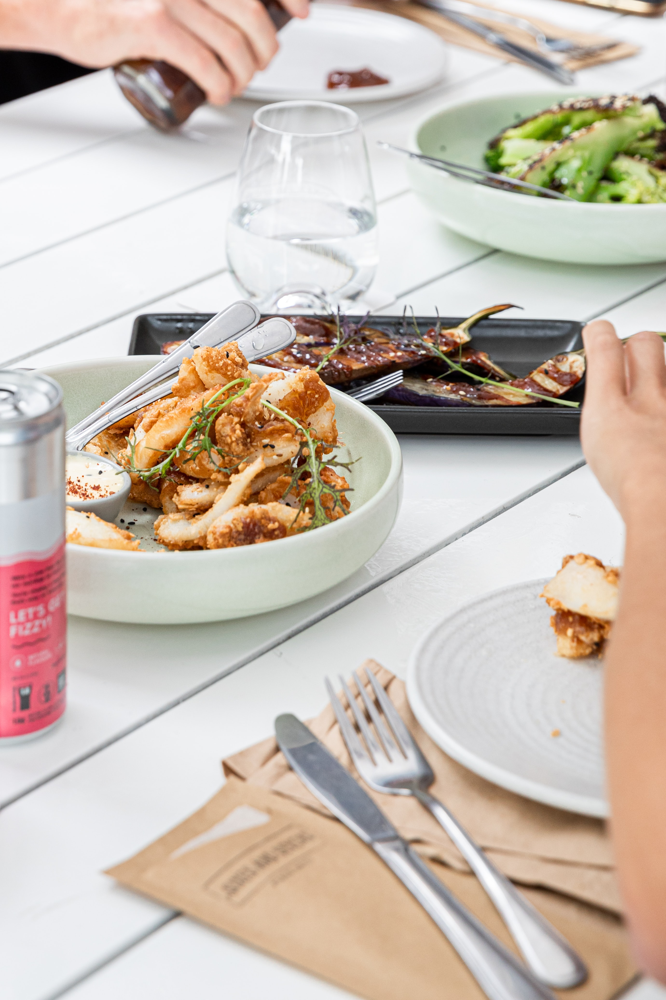

아침에 할 일
아침밥
to-do list 작성하기
멘탈관리
ol은 ordered list의 약자 ul은 unordered list의 약자
오늘
아침
기분은...
배가고파용 배가 고플 땐
밥
을 먹어야 해용
호호호
br태그는 줄바꿈이라고 하는 시각적 의미만 갖고 있기 때문에 뭘 감쌀 필요가 없다
https://www.advancedwebranking.com/html/ 
문단 나눠지나요?!
문단나눌때는 p태그가 좋다. 웹페이지 정보를 가치있게 만듦. 내가 쓴 이만큼이 단락이다 라는 정보를 표현해주기 떄문임 하지만 p태그는 정해져있는 여백만큼 벌여져있어서 시각적 자유도가 떨어짐. unsplash.com 저작권 구애받지 않고 사용 가능